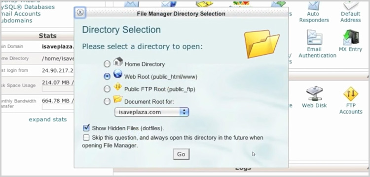
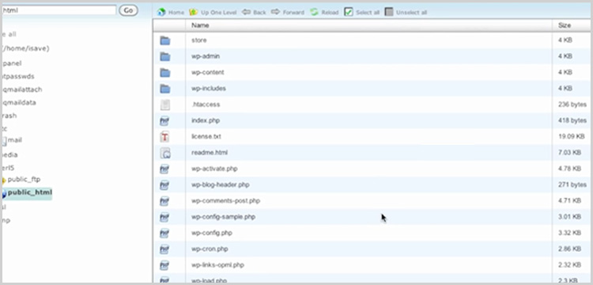

Image Tag
Architecture
OS
Size
latest
x64
Alpine Linux

armhf
arm32v6
Alpine Linux
aarch64
arm64
Alpine Linux
Episode 1
In this video series we're going to look at setting up a home server using a Raspberry Pi 4 8GB. You can use other versions of the Pi 4, but I recommend the 8GB model as it is going to be our main server.
In this video we're going to take a look at the hardware I'm going to use in my Raspberry Pi Home Server:
- Raspberry Pi 4 8GB
- Argon One M.2 Case
- Silicon Power 256GB Boot Drive
- Sabrent 2TB Rocket NVMe PCIe M.2 Storage Drive
- Sabrent USB 3.2 Tool-Free NVMe Enclosure
Currently the Argon One M.2 case is NOT *currently* available on Amazon, but you can get it on their website: https://dbte.ch/argononem2
AFFILIATE LINKS:
You can get their standard (non-M.2) Argon One case here: https://amzn.to/3ouFtnx
Silicon Power 256GB A55 M.2 SSD: https://amzn.to/2G00chM
Sabrent 2TB Rocket NVMe PCIe M.2: https://amzn.to/3ovZmuv
Sabrent USB 3.2 Tool-Free NVMe Enclosure: https://amzn.to/35xruVG
CanaKit Raspberry Pi 4 8GB: https://amzn.to/2FZDvKA
Episode 2
I've been working on getting to a video about installing OpenMediaVault on a Raspberry Pi for a while now and even went so far as to download the files I would need for the video and put them on my desktop for safe keeping and a little reminder to hurry up and make the video.
This morning I decided to finally make the video. I went back through some online resources and realized they had changed the entire process when they released version 5 of OpenMediaVault.
Makes me glad that I didn't make that video sooner.
In order to setup an OpenMediaVault Raspberry Pi server, you're going to need a few things:
- Raspberry Pi 3 or 4 with a proper power supply
- Micro SD Card - 8GB or more with USB Adapter
- Ethernet Cable is preferable for network access
- External USB Hard Drive that you're okay formatting / erasing
- A Computer - I'm using a Windows 10 PC
- SSH program like Putty
Once you've gathered all that, you're set to go.
The rest of the instructions can be found here on my blog:
Now it’s time to work on making sure that Raspian is full updated. In the terminal window, type:
sudo apt-get update
Let the system complete. When you’ve got a blinking cursor, type the following:
sudo apt-get upgrade
This may take several minutes, so let it run until you get back to a blinking cursor. Then type:
sudo reboot
This will reboot your Raspberry Pi and close your Putty connection. Wait a couple of minutes and the open Putty and login like you did before with your new password.
Next, you’ll add the “pi” user to the SSH group with this command:
sudo adduser pi ssh
Once that’s complete, you’re going to download and execute a file from Github that will install and configure the OpenMediaVault server software. That script is this:
wget -O - https://github.com/OpenMediaVault-Plugin-Developers/installScript/raw/master/install | sudo bash
This process may take a while depending on your internet connection and what version Raspberry Pi you’ve got. It took me about 15 minutes to complete this, but understand that it could take upwards of 30 minutes.
Once the script has run and completed, reboot the Raspberry Pi:
sudo reboot
At this point, you can plug in your external USB hard drive.
Episode 3
Overclock Commands and entries
SSH into your Pi and run this command:
sudo nano /boot/config.txt
Then add these lines and save:
over_voltage=2
arm_freq=1750
gpu_freq=750
RPi-Monitor Docker Container
SSH into your Pi and run this command:
docker run --device=/dev/vchiq --volume=/opt/vc:/opt/vc --volume=/boot:/boot --volume=/sys:/dockerhost/sys:ro --volume=/etc:/dockerhost/etc:ro --volume=/proc:/dockerhost/proc:ro --volume=/usr/lib:/dockerhost/usr/lib:ro -p=8888:8888 --name="rpi-monitor" -d michaelmiklis/rpi-monitor:latest
Episode 4
Here is the stack we'll use for Duplicati on our Raspberry Pi:
---
version: "2.1"
services:
duplicati:
image: linuxserver/duplicati
container_name: duplicati
environment:
- PUID=998
- PGID=100
- TZ=America/Denver
volumes:
- /srv/dev-disk-by-label-Files/Config/Duplicati:/config #Config Files
- /srv/dev-disk-by-label-Files/Backups:/BackupStorage #Backup Storage
- /srv/dev-disk-by-label-Files/Config:/ConfigBackup #What to Backup
- /srv/dev-disk-by-label-Files/Databases:/DatabaseBackup #What to Backup
ports:
- 8200:8200
restart: unless-stopped
Episode 5
Once you’re logged in via SSH, create a folder called nginx and a new file called config.json in that folder:
mkdir nginx
cd nginx
nano config.json
Then you can paste the following into the terminal screen:
{
"database": {
"engine": "mysql",
"host": "db",
"name": "npm",
"user": "npm",
"password": "npm",
"port": 3306
}
}
Save and close the file.
Now you’ll create a file called docker-compose.yml:
nano docker-compose.yml
Then paste the following in the terminal screen:
---
version: '3'
services:
app:
image: 'jc21/nginx-proxy-manager:latest'
ports:
- '80:80' #HTTP Traffic
- '81:81' #Dashboard Port
- '443:443' #HTTPS Traffic
volumes:
- ./config.json:/app/config/production.json
- ./data:/data
- ./letsencrypt:/etc/letsencrypt
db:
image: 'jc21/mariadb-aria:10.4'
environment:
MYSQL_ROOT_PASSWORD: 'npm'
MYSQL_DATABASE: 'npm'
MYSQL_USER: 'npm'
MYSQL_PASSWORD: 'npm'
volumes:
- ./data/mysql:/var/lib/mysql
Save and close the file.
Then, to deploy the new container, you can enter the following in your terminal:
sudo docker-compose up -d
Normally we wouldn’t run this as sudo, but there have been incidents where an error comes up about Docker being installed in a non-standard location and running this as sudo seems to get around that.
Once everything has deployed in the terminal screen, you can jump over to Portainer and take a look at the logs for the nginx_app (or similarly named) and make sure that everything has completed.
If the last line of the logs is this:
Creating a new JWT key pair...
Then you need to wait a bit longer for things to finish up.
Once everything has finished, you can go to http://your-server-address:81
The default login credentials are:
Username: admin@example.com
Password: changeme
Once you’re logged in, you’ll be prompted to change the username and password.
That’s it! Now you’ve got NGINX Proxy Manager installed on a Raspberry Pi 4!
CloudFlare DDNS - Update CloudFlare with Your Dynamic IP Address
https://hub.docker.com/r/oznu/cloudflare-ddns
Quick Setup:
docker run \-e API_KEY=xxxxxxx \-e ZONE=example.com \-e SUBDOMAIN=subdomain \oznu/cloudflare-ddns
--restart=always
- ensure the container restarts automatically after host reboot.
-e
API_KEY - Your CloudFlare scoped API token. See the Creating
a Cloudflare API token below. Required
API_KEY_FILE
- Path to load your CloudFlare scoped API token from (e.g. a Docker
secret). If both API_KEY_FILE
and API_KEY are specified,
API_KEY_FILE takes
precedence.
-e
ZONE - The DNS zone that DDNS updates should be applied to.
Required
-e SUBDOMAIN - A
subdomain of the ZONE to write DNS
changes to. If this is not supplied the root zone will be used.
-e
PROXIED - Set to true to make
traffic go through the CloudFlare CDN. Defaults to false.
-e
RRTYPE=A - Set to AAAA to use
set IPv6 records instead of IPv4 records. Defaults to A
for IPv4 records.
-e
DELETE_ON_STOP - Set to true to
have the dns record deleted when the container is stopped. Defaults
to false.
-e
INTERFACE=tun0 - Set to tun0 to
have the IP pulled from a network interface named tun0.
If this is not supplied the public IP will be used instead. Requires
--network host run argument.
-e
CUSTOM_LOOKUP_CMD="echo '1.1.1.1'" - Set to any
shell command to run them and have the IP pulled from the standard
output. Leave unset to use default IP address detection methods.
-e
DNS_SERVER=10.0.0.2 - Set to the IP address of the DNS server
you would like to use. Defaults to 1.1.1.1 otherwise.
-e CRON="@daily"
- Set your own custom CRON value before the exec portion. Defaults
to every 5 minutes - */5 * * * *.
-e EMAIL - Your
CloudFlare email address when using an Account-level token. This
variable MUST NOT be set when using a scoped API token.
To create a CloudFlare API token for your DNS zone go to https://dash.cloudflare.com/profile/api-tokens and follow these steps:
Click Create Token
Provide the token
a name, for example, cloudflare-ddns
Grant the token the following permissions:
Zone - Zone Settings - Read
Zone - Zone - Read
Zone - DNS - Edit
Set the zone resources to:
Include - All zones
Complete the wizard and copy the generated
token into the API_KEY variable for the
container
If you need multiple records pointing to your public IP address you can create CNAME records in CloudFlare.
If you're wanting to set IPv6 records set the
envrionment variable RRTYPE=AAAA. You
will also need to run docker with IPv6 support, or run the container
with host networking enabled.
If you prefer to use Docker Compose:
version: '2'services:cloudflare-ddns:image: oznu/cloudflare-ddns:latestrestart: alwaysenvironment:- API_KEY=xxxxxxx- ZONE=example.com- SUBDOMAIN=subdomain- PROXIED=false
Copyright (C) 2017-2020 oznu
This program is free software: you can redistribute it and/or modify it under the terms of the GNU General Public License as published by the Free Software Foundation, either version 3 of the License, or (at your option) any later version.
This program is distributed in the hope that it will be useful, but WITHOUT ANY WARRANTY; without even the implied warranty of MERCHANTABILITY or FITNESS FOR A PARTICULAR PURPOSE. See the GNU General Public License for more details.
Image Tag |
Architecture |
OS |
Size |
|---|---|---|---|
latest |
x64 |
Alpine Linux |
|
armhf |
arm32v6 |
Alpine Linux |
|
aarch64 |
arm64 |
Alpine Linux |
Episode 7
Open Portainer on your Raspberry Pi and create a new Stack.
Paste the following into your new stack:
version: '2'volumes:nextcloud:db:services:db:image: yobasystems/alpine-mariadb:latestcommand: --transaction-isolation=READ-COMMITTED --binlog-format=ROWrestart: alwaysvolumes:- db:/var/lib/mysqlenvironment:- MYSQL_ROOT_PASSWORD=password #Change This- MYSQL_PASSWORD=password #Change This- MYSQL_DATABASE=nextcloud- MYSQL_USER=nextcloudapp:image: nextcloudports:- 8080:80links:- dbvolumes:- nextcloud:/var/www/html #Change 'nextcloud' to your external drive volume if availablerestart: always
Change the few things as noted above.
Click the “Deploy the Stack” button.
Next, go to your NGINX Proxy Manager dashboard. Create a new Proxy Host.
Fill in the domain name (or subdomain) you designated for your NextCloud install.
Scheme should be http.
Forward Hostname/IP should be your Raspberry Pi’s IP address.
Foward port should be 8080.
Click the “Block Common Exploits” toggle.
Go to the SSL tab.
Change “None” to “Request a New SSL Certificate”.
Click the “Force SSL” and “HTTP/2 Support” toggles.
You can click the HSTS toggles if you’ve enabled HSTS in CloudFlare.
Click “Save”.
After a moment, you should see that everything has deployed correctly.
Next, go to https://nextcloud.yourdomain.com (change this to your actual domain) and you should see the NextCloud install page.
Enter an Admin username and password.
Change the database type to MySQL/MariaDB.
Enter the username, password, and database name as you have them in your Portainer Stack.
Change Database location to from “localhost” to “db” (without quotes).
Toggle the option for additional app installation to meet your needs.
Click “Finish setup”.
At this point, you can go get some lunch or something as the install process will take a while since we’re on a 4 core ARM processor.
Once the install is complete, you’ll be taken to the NextCloud dashboard and then you should be good to go!
Episode 8
https://gist.github.com/dnburgess/40c2b297911d1de4353f74c3da8f951f
DB Tech BitWardenRS on Pi 4
---
version: "2"
services:
bitwardenrs:
image: bitwardenrs/server:latest
container_name: bitwardenrs
volumes:
- /srv/dev-disk-by-label-Files/Config/BitWardenRS:/data/
ports:
- 8100:80
restart: unless-stopped
You’ll need to have Traefik and CloudFlare setup for this to work. Check out this tutorial in order to get that setup: https://dbtechreviews.com/2020/04/how-to-install-traefik-on-omv-and-docker/
Bitwarden will NOT let you access its vault unless you’re accessing it on an https:// URL.
You can find a basic SSH command to run on Bitwarden’s website, but we’re not going to use that since we like to use Stacks whenever possible.
Here’s the Stack that we’re going to use for this installation:
---version: "2"services:bitwarden:image: bitwardenrs/server:latestcontainer_name: bitwardenlabels:- traefik.enable=true- traefik.http.routers.bitwarden.rule=Host(`pw.dbtechdemo.com`)- traefik.http.routers.bitwarden.entrypoints=web- traefik.http.services.bitwarden.loadbalancer.server.port=80networks:- webvolumes:- /srv/dev-disk-by-label-Files/Config/BitWarden:/data/restart: unless-stopped
The only things you should need to change here is the URL used to access Bitwarden and the location of your Config folder in volumes. Once you have those 2 things changed to fit your setup, you can click the “Deploy the Container” button and give it a few minutes to download and setup everything needed for Bitwarden.
Traefik is the leading open source reverse proxy and load balancer for HTTP and TCP-based applications that is easy, dynamic, automatic, fast, full-featured, production proven, provides metrics, and integrates with every major cluster technology… No wonder it’s so popular!
Setting up Traefik is super simple, but, because it uses a version 3 Stack, we can’t do this in Portainer. That means we’ll have to do it in an SSH program like PuTTY.
In order to set this up, you’ll need to have a domain name available that you can use to point to your home’s IP address. We’re going to use CloudFlare to do this as it will do a couple of really important things:
It will give us the SSLs we need to secure the traffic on our domain.
It will mask our home IP address, so if someone finds your domain name and they ping it, they will get a CloudFlare IP address and not your home’s IP address.
It will also help block malicious traffic trying to hit your server. It won’t be perfect, but it will do a lot of blocking for you.
First thing is to open Portainer and go to the Network tab. Once there, create a new network called “web” (without the quotes) and leave it set as a bridge network.
Next, open PuTTY and connect to your server on port 22 as root.
In the directory you landed on when you logged in, enter the following commands to create and move into a folder called traefik:
mkdir traefik cd traefik
Next, you’ll need to create a couple of files. First, we’ll create a file called dynamic.yaml:
nano dynamic.yaml
Press return on your keyboard and copy/paste the following into the mostly empty screen:
## Setting up the middleware for redirect to https ##
http:
middlewares:
redirect:
redirectScheme:
scheme: httpsThen press CTRL+O and then Enter to save the file. Then press CTRL+X to exit the file.
The next file we’ll create is docker-compose.yml:
nano docker-compose.yml
Press return on your keyboard and copy/paste the following into the mostly empty screen:
version: "3.3"
services:
traefik:
image: traefik:v2.0
restart: always
container_name: traefik
ports:
- "80:80" # <== http
- "8080:8080" # <== :8080 is where the dashboard runs on
- "443:443" # <== https
command:
- --api.insecure=true # <== Enabling insecure api, NOT RECOMMENDED FOR PRODUCTION
- --api.dashboard=true # <== Enabling the dashboard to view services, middlewares, routers, etc...
- --api.debug=true # <== Enabling additional endpoints for debugging and profiling
- --log.level=DEBUG # <== Setting the level of the logs from traefik
- --providers.docker=true # <== Enabling docker as the provider for traefik
- --providers.docker.exposedbydefault=false # <== Don't expose every container to traefik, only expose enabled ones
- --providers.file.filename=/dynamic.yaml # <== Referring to a dynamic configuration file
- --providers.docker.network=web # <== Operate on the docker network named web
- --entrypoints.web.address=:80 # <== Defining an entrypoint for port :80 named web
volumes:
- /var/run/docker.sock:/var/run/docker.sock # <== Volume for docker admin
- ./dynamic.yaml:/dynamic.yaml # <== Volume for dynamic conf file, **ref: line 27
networks:
- web # <== Placing traefik on the network named web, to access containers on this network
labels:
- "traefik.enable=true" # <== Enable traefik on itself to view dashboard and assign subdomain to view it
- "traefik.http.routers.api.rule=Host(`monitor.dbtechdemo.com`)" # <== Setting the domain for the dashboard
- "traefik.http.routers.api.service=api@internal" # <== Enabling the api to be a service to access
networks:
web:
external: trueChange the URL of monitor.dbtechdemo.com to whatever your monitor URL will be.
Then press CTRL+O and then Enter to save the file. Then press CTRL+X to exit the file.
Now that you’ve created the files you’ll need, you can enter the following command:
docker-compose up -d
The script will run and should only take a minute to complete. Once it has completed, head back to Portainer to look at the logs for the Traefik container.
Once things have settled down, you can go to http://your-server-ip:8080 and see the Traefik dashboard.
Episode 9
DB Tech Pi-hole on Pi 4
---
version: 2
services:
pihole:
container_name: pihole
image: pihole/pihole:latest
ports:
- 53:53/tcp #DNS Port
- 53:53/udp #DNS Port
#- 67:67/udp #DHCP Port
- 83:80/tcp #Dashboard Port
#- 443:443/tcp #Port 443 is to provide a sinkhole for ads that use SSL.
environment:
TZ: America/Denver
WEBPASSWORD: password
DNS1: 1.1.1.1
DNS2: 1.0.0.1
DNSSEC: 'true'
volumes:
- /srv/dev-disk-by-label-Files/Config/Pihole/etc-pihole/:/etc/pihole/
- /srv/dev-disk-by-label-Files/Config/Pihole/etc-dnsmasq.d/:/etc/dnsmasq.d/
cap_add:
- NET_ADMIN
restart: unless-stopped
This won't work out of the box as Raspbian has port 53 being used. We need to stop and reconfigure the service using it.
To stop systemd-resolved, run this command:
sudo systemctl stop systemd-resolved
To edit systemd-resolved, run this command:
sudo nano /etc/systemd/resolved.conf
Edit the file so it looks like this:
[Resolve]
DNS=1.1.1.1
FallbackDNS=1.0.0.1
#Domains=
#LLMNR=yes
#MulticastDNS=yes
#DNSSEC=allow-downgrade
#DNSOverTLS=no
#Cache=yes
#DNSStubListener=yes
#ReadEtcHosts=yes
DNSStubListener=no
Save and exit.
To create a symlink of the changes you made, run this command:
sudo ln -sf /run/systemd/resolve/resolv.conf /etc/resolv.conf
Episode 10
DB Tech WatchTower on Pi 4
version: '2.1'
services:
watchtower:
image: containrrr/watchtower
container_name: watchtower
volumes:
- /var/run/docker.sock:/var/run/docker.sock
environment:
- TZ=America/Denver
- WATCHTOWER_MONITOR_ONLY=true
- WATCHTOWER_SCHEDULE=0 0 16 ? * THU
- WATCHTOWER_CLEANUP=true
- WATCHTOWER_NOTIFICATIONS=email
- WATCHTOWER_NOTIFICATION_EMAIL_FROM=FromEmail@gmail.com
- WATCHTOWER_NOTIFICATION_EMAIL_TO=ToEmail@gmail.com
- WATCHTOWER_NOTIFICATION_EMAIL_SERVER=smtp.gmail.com
- WATCHTOWER_NOTIFICATION_EMAIL_SERVER_PASSWORD=password
- WATCHTOWER_NOTIFICATION_EMAIL_SUBJECTTAG=Pi Server Container Updates
- WATCHTOWER_NOTIFICATION_EMAIL_SERVER_USER=FromEmail@gmail.com
- WATCHTOWER_NOTIFICATION_EMAIL_SERVER_PORT=587
restart: unless-stopped
By default, watchtower will monitor
all containers running within the Docker daemon to which it is
pointed (in most cases this will be the local Docker daemon, but you
can override it with the --host option
described in the next section). However, you can restrict watchtower
to monitoring a subset of the running containers by specifying the
container names as arguments when launching watchtower.
$ docker run -d \
--name watchtower \
-v /var/run/docker.sock:/var/run/docker.sock \
containrrr/watchtower \
nginx redis
In the example above, watchtower will only monitor the containers
named "nginx" and "redis" for updates -- all of
the other running containers will be ignored. If you do not want
watchtower to run as a daemon you can pass the --run-once
flag and remove the watchtower container after its execution.
$ docker run --rm \
-v /var/run/docker.sock:/var/run/docker.sock \
containrrr/watchtower \
--run-once \
nginx redis
In the example above, watchtower will execute an upgrade attempt on
the containers named "nginx" and "redis". Using
this mode will enable debugging output showing all actions performed,
as usage is intended for interactive users. Once the attempt is
completed, the container will exit and remove itself due to the --rm
flag.
When no arguments are specified, watchtower will monitor all running containers.
Shows documentation about the supported flags.
Argument: --helpEnvironment Variable: N/AType: N/ADefault: N/A
Sets the time zone to be used by WatchTower's logs
and the optional Cron scheduling argument (--schedule). If this
environment variable is not set, Watchtower will use the default time
zone: UTC. To find out the right value, see this
list, find your location and use the value in TZ Database
Name, e.g Europe/Rome. The timezone can alternatively
be set by volume mounting your hosts /etc/timezone file. -v
/etc/timezone:/etc/timezone:ro
Argument: N/AEnvironment Variable: TZType: StringDefault: "UTC"
Removes old images after updating. When this flag is specified, watchtower will remove the old image after restarting a container with a new image. Use this option to prevent the accumulation of orphaned images on your system as containers are updated.
Argument: --cleanupEnvironment Variable: WATCHTOWER_CLEANUPType: BooleanDefault: false
Removes attached volumes after updating. When this flag is specified, watchtower will remove all attached volumes from the container before restarting with a new image. Use this option to force new volumes to be populated as containers are updated.
Argument: --remove-volumesEnvironment Variable: WATCHTOWER_REMOVE_VOLUMESType: BooleanDefault: false
Enable debug mode with verbose logging.
Argument: --debug, -dEnvironment Variable: WATCHTOWER_DEBUGType: BooleanDefault: false
Enable trace mode with very verbose logging. Caution: exposes credentials!
Argument: --traceEnvironment Variable: WATCHTOWER_TRACEType: BooleanDefault: false
Disable ANSI color escape codes in log output.
Argument: --no-colorEnvironment Variable: NO_COLORType: BooleanDefault: false
Docker daemon socket to connect to. Can be pointed at a remote Docker host by specifying a TCP endpoint as "tcp://hostname:port".
Argument: --host, -HEnvironment Variable: DOCKER_HOSTType: StringDefault: "unix:///var/run/docker.sock"
The API version to use by the Docker client for connecting to the Docker daemon. The minimum supported version is 1.24.
Argument: --api-version, -aEnvironment Variable: DOCKER_API_VERSIONType: StringDefault: "1.24"
Will also include restarting containers.
Argument: --include-restartingEnvironment Variable: WATCHTOWER_INCLUDE_RESTARTINGType: BooleanDefault: false
Will also include created and exited containers.
Argument: --include-stoppedEnvironment Variable: WATCHTOWER_INCLUDE_STOPPEDType: BooleanDefault: false
Start any stopped containers that have had their
image updated. This argument is only usable with the
--include-stopped argument.
Argument: --revive-stoppedEnvironment Variable: WATCHTOWER_REVIVE_STOPPEDType: BooleanDefault: false
Poll interval (in seconds). This value controls
how frequently watchtower will poll for new images. Either --schedule
or a poll interval can be defined, but not both.
Argument: --interval, -iEnvironment Variable: WATCHTOWER_POLL_INTERVALType: IntegerDefault: 86400 (24 hours)
Update containers that have a
com.centurylinklabs.watchtower.enable
label set to true.
Argument: --label-enableEnvironment Variable: WATCHTOWER_LABEL_ENABLEType: BooleanDefault: false
Do not update containers that
have com.centurylinklabs.watchtower.enable
label set to false and no --label-enable
argument is passed. Note that only one or the other (targeting by
enable label) can be used at the same time to target containers.
Will only monitor for new images, send notifications and invoke the pre-check/post-check hooks, but will not update the containers.
Please note
Due to Docker API limitations the latest image will still be pulled from the registry.
Argument: --monitor-onlyEnvironment Variable: WATCHTOWER_MONITOR_ONLYType: BooleanDefault: false
Note that monitor-only can also be specified on a per-container basis
with the com.centurylinklabs.watchtower.monitor-only
label set on those containers.
Do not restart containers after updating. This option can be useful when the start of the containers is managed by an external system such as systemd.
Argument: --no-restartEnvironment Variable: WATCHTOWER_NO_RESTARTType: BooleanDefault: false
Do not pull new images. When this flag is specified, watchtower will not attempt to pull new images from the registry. Instead it will only monitor the local image cache for changes. Use this option if you are building new images directly on the Docker host without pushing them to a registry.
Argument: --no-pullEnvironment Variable: WATCHTOWER_NO_PULLType: BooleanDefault: false
Do not send a message after watchtower started. Otherwise there will be an info-level notification.
Argument: --no-startup-messageEnvironment Variable: WATCHTOWER_NO_STARTUP_MESSAGEType: BooleanDefault: false
Run an update attempt against a container name list one time immediately and exit.
Argument: --run-onceEnvironment Variable: WATCHTOWER_RUN_ONCEType: BooleanDefault: false
Runs Watchtower in HTTP API mode, only allowing image updates to be triggered by an HTTP request. For details see HTTP API.
Argument: --http-api-updateEnvironment Variable: WATCHTOWER_HTTP_APIType: BooleanDefault: false
Sets an authentication token to HTTP API requests.
Argument: --http-api-tokenEnvironment Variable: WATCHTOWER_HTTP_API_TOKENType: StringDefault: -
Update containers that have a
com.centurylinklabs.watchtower.scope
label set with the same value as the given argument. This enables
running
multiple instances.
Argument: --scopeEnvironment Variable: WATCHTOWER_SCOPEType: StringDefault: -
Enables a metrics endpoint, exposing prometheus metrics via HTTP. See Metrics for details.
Argument: --http-api-metricsEnvironment Variable: WATCHTOWER_HTTP_API_METRICSType: BooleanDefault: false
Cron
expression in 6 fields (rather than the traditional 5) which
defines when and how often to check for new images. Either --interval
or the schedule expression can be defined, but not both. An example:
--schedule "0 0 4 * * *"
Argument: --schedule, -sEnvironment Variable: WATCHTOWER_SCHEDULEType: StringDefault: -
Restart one image at time instead of stopping and starting all at once. Useful in conjunction with lifecycle hooks to implement zero-downtime deploy.
Argument: --rolling-restartEnvironment Variable: WATCHTOWER_ROLLING_RESTARTType: BooleanDefault: false
Timeout before the container is forcefully
stopped. When set, this option will change the default (10s)
wait time to the given value. An example: --stop-timeout
30s will set the timeout to 30 seconds.
Argument: --stop-timeoutEnvironment Variable: WATCHTOWER_TIMEOUTType: DurationDefault: 10s
Use TLS when connecting to the Docker socket and verify the server's certificate. See below for options used to configure notifications.
Argument: --tlsverifyEnvironment Variable: DOCKER_TLS_VERIFYType: BooleanDefault: false
Episode 11
How To Setup MacVLAN in Portainer
Information Not Found !!!
Episode 12
AdGuard Home is a network-wide software for blocking ads & tracking. After you set it up, it’ll cover ALL your home devices, and you don’t need any client-side software for that. With the rise of Internet-Of-Things and connected devices, it becomes more and more important to be able to control your whole network.
Instructions
First, create 2 volumes:
docker volume create agwork
docker volume create agconf
Next create the MacVLAN:
sudo docker network create -d macvlan -o parent=eth0 --subnet=192.168.68.0/24 --gateway=192.168.68.1 --ip-range=192.168.68.150/32 ag_hal
IP Prefix Chart: https://www.ripe.net/images/IPv4CIDRChart_2015.jpg
You'll most likely need to change the subnet to match your network's subnet. Also be sure to put in your router's IP address and change the IP range to match your network. You can change "ag_hal" to whatever you want to name your MacVLAN.
Next run this command:
docker run --name adguardhome -v agwork:/opt/adguardhome/work -v agconf:/opt/adguardhome/conf -p 53:53/tcp -p 53:53/udp -p 67:67/udp -p 68:68/tcp -p 68:68/udp -p 80:80/tcp -p 443:443/tcp -p 853:853/tcp -p 3000:3000/tcp -d adguard/adguardhome
The command will fail and that's fine. Go to Portainer and edit the AdGuard container. Change the network from "bridge" to whatever you named your MacVLAN. Deploy the container.
Next, go to http://[your-macvlan-ip]:3000 and follow the setup instructions.
When that's done, you can login to your new AdGuard container by going to http://[your-macvlan-ip].
From there, you can customize the blocklists and that sort of thing to your liking.
Episode 13
DB Tech Transmission OpenVPN
version: 2
services:
transmission-openvpn:
volumes:
- /srv/dev-disk-by-label-Files/Torrents:/data
environment:
- OPENVPN_PROVIDER=PIA
- OPENVPN_CONFIG=France
- OPENVPN_USERNAME=username
- OPENVPN_PASSWORD=password
- WEBPROXY_ENABLED=false
- LOCAL_NETWORK=192.168.68.0/24
cap_add:
- NET_ADMIN
logging:
driver: json-file
options:
max-size: 10m
ports:
- 9091:9091
image: haugene/transmission-openvpn:latest-armhf
Episode 14
OpenMediaVault: Setting Up Remote Mounts
Null text information !!!
Episode 15
I took out port 443 as we'll be accessing this locally without SSL.
Our images support multiple architectures such as
x86-64, arm64
and armhf. We utilise the docker
manifest for multi-platform awareness. More information is available
from docker here
and our announcement here.
Simply pulling ghcr.io/linuxserver/heimdall
should retrieve the correct image for your arch, but you can also
pull specific arch images via tags.
The architectures supported by this image are:
Architecture |
Tag |
|---|---|
x86-64 |
amd64-latest |
arm64 |
arm64v8-latest |
armhf |
arm32v7-latest |
This image provides various versions that are
available via tags. latest tag usually
provides the latest stable version. Others are considered under
development and caution must be exercised when using them.
Tag |
Description |
|---|---|
latest |
Stable Heimdall releases. |
development |
Latest commit from the github master branch. |
Here are some example snippets to help you get started creating a container.
Compatible with docker-compose v2 schemas.
---version: "2.1"services:heimdall:image: ghcr.io/linuxserver/heimdallcontainer_name: heimdallenvironment:- PUID=1000- PGID=1000- TZ=Europe/Londonvolumes:- </path/to/appdata/config>:/configports:- 80:80- 443:443restart: unless-stopped
docker run -d \--name=heimdall \-e PUID=1000 \-e PGID=1000 \-e TZ=Europe/London \-p 80:80 \-p 443:443 \-v </path/to/appdata/config>:/config \--restart unless-stopped \ghcr.io/linuxserver/heimdall
Container images are configured using parameters
passed at runtime (such as those above). These parameters are
separated by a colon and indicate <external>:<internal>
respectively. For example, -p 8080:80
would expose port 80 from inside the
container to be accessible from the host's IP on port 8080
outside the container.
Parameter |
Function |
|---|---|
|
http gui |
|
https gui |
|
for UserID - see below for explanation |
|
for GroupID - see below for explanation |
|
Specify a timezone to use EG Europe/London |
|
Contains all relevant configuration files. |
You can set any environment variable from a file
by using a special prepend FILE__.
As an example:
-e FILE__PASSWORD=/run/secrets/mysecretpassword
Will set the environment variable PASSWORD
based on the contents of the /run/secrets/mysecretpassword
file.
For all of our images we provide the ability to
override the default umask settings for services started within the
containers using the optional -e UMASK=022
setting. Keep in mind umask is not chmod it subtracts from
permissions based on it's value it does not add. Please read up here
before asking for support.
When using volumes (-v
flags) permissions issues can arise between the host OS and the
container, we avoid this issue by allowing you to specify the user
PUID and group PGID.
Ensure any volume directories on the host are owned by the same user you specify and any permissions issues will vanish like magic.
In this instance PUID=1000
and PGID=1000, to find yours use id
user as below:
$ id usernameuid=1000(dockeruser) gid=1000(dockergroup) groups=1000(dockergroup)
Access the web gui at http://SERVERIP:PORT
This image now supports password protection
through htpasswd. Run the following command on your host to generate
the htpasswd file docker exec -it heimdall
htpasswd -c /config/nginx/.htpasswd <username>. Replace
/config/nginx/site-confs/default and
restart the container after updating the image. A new site config
with htpasswd support will be created in its place.
We publish various Docker Mods to enable additional functionality within the containers. The list of Mods available for this image (if any) as well as universal mods that can be applied to any one of our images can be accessed via the dynamic badges above.
Shell access
whilst the container is running: docker exec
-it heimdall /bin/bash
To monitor the
logs of the container in realtime: docker logs
-f heimdall
container version number
docker
inspect -f '{{ index .Config.Labels "build_version" }}'
heimdall
image version number
docker inspect -f '{{
index .Config.Labels "build_version" }}'
ghcr.io/linuxserver/heimdall
Most of our images are static, versioned, and require an image update and container recreation to update the app inside. With some exceptions (ie. nextcloud, plex), we do not recommend or support updating apps inside the container. Please consult the Application Setup section above to see if it is recommended for the image.
Below are the instructions for updating containers:
Update all images:
docker-compose pull
or update a
single image: docker-compose pull heimdall
Let compose update
all containers as necessary: docker-compose up
-d
or update a
single container: docker-compose up -d
heimdall
You can also remove the old dangling images:
docker image prune
Update the image:
docker pull ghcr.io/linuxserver/heimdall
Stop the running
container: docker stop heimdall
Delete the
container: docker rm heimdall
Recreate a new
container with the same docker run parameters as instructed above
(if mapped correctly to a host folder, your /config
folder and settings will be preserved)
You can also remove the old dangling images:
docker image prune
Pull the latest image at its tag and replace it with the same env variables in one run:
docker run --rm \-v /var/run/docker.sock:/var/run/docker.sock \containrrr/watchtower \--run-once heimdall
You can also remove the old dangling images:
docker image prune
Note: We do not endorse the use of Watchtower as a solution to automated updates of existing Docker containers. In fact we generally discourage automated updates. However, this is a useful tool for one-time manual updates of containers where you have forgotten the original parameters. In the long term, we highly recommend using Docker Compose.
We recommend Diun for update notifications. Other tools that automatically update containers unattended are not recommended or supported.
If you want to make local modifications to these images for development purposes or just to customize the logic:
git clone https://github.com/linuxserver/docker-heimdall.gitcd docker-heimdalldocker build \--no-cache \--pull \-t ghcr.io/linuxserver/heimdall:latest .
The ARM variants can be built on x86_64 hardware using
multiarch/qemu-user-static
docker run --rm --privileged multiarch/qemu-user-static:register --reset
Once registered you can define the dockerfile to use with -f
Dockerfile.aarch64.
Episode 16
Here is the stack I used in this video that works
DB Tech Plex Temp Fix for Latest Release Issues
---
version: "2.1"
services:
plex:
image: ghcr.io/linuxserver/plex:1.21.0.3616-d87012962-ls5
container_name: plex
network_mode: host
environment:
- PUID=1000
- PGID=1000
- VERSION=docker
- UMASK_SET=022 #optional
- PLEX_CLAIM= #optional
volumes:
- /path/to/library:/config
- /path/to/tvseries:/tv
- /path/to/movies:/movies
restart: unless-stopped
Here is a stack with the "bionic" tag
DB Tech Plex Bionic Fix for Latest Release Issues
---
version: "2.1"
services:
plex:
image: ghcr.io/linuxserver/plex:bionic
container_name: plex
network_mode: host
environment:
- PUID=1000
- PGID=1000
- VERSION=docker
- UMASK_SET=022 #optional
- PLEX_CLAIM= #optional
volumes:
- /path/to/library:/config
- /path/to/tvseries:/tv
- /path/to/movies:/movies
restart: unless-stopped
Episode 17
OpenMediaVault Recovery - OMV First Aid
You can change your:
- OMV IP Address
- OMV Dashboard Port
- Change/Reset Your OMV Password
Episode 18
DB Tech WordPress for Pi Home Server
version: '2.1'
services:
wordpress:
image: wordpress
restart: always
ports:
- 84:80
environment:
WORDPRESS_DB_HOST: db
WORDPRESS_DB_USER: exampleuser
WORDPRESS_DB_PASSWORD: examplepass
WORDPRESS_DB_NAME: exampledb
volumes:
- /srv/dev-disk-by-label-Files/Config/WordPress:/var/www/html
links:
- db:db
db:
image: yobasystems/alpine-mariadb:latest
restart: always
environment:
MYSQL_DATABASE: exampledb
MYSQL_USER: exampleuser
MYSQL_PASSWORD: examplepass
MYSQL_RANDOM_ROOT_PASSWORD: '1'
volumes:
- /srv/dev-disk-by-label-Files/Databases/WordPress:/var/lib/mysql
The uploaded file exceeds the upload_max_filesize directive in php.ini
You might be searching for result for the above error message and might be wondering how to increase memory in the php.ini WordPress website file. The following solution will help you fix the error within few minutes without waiting for the support team to answer you.
Before setting up to increase memory in WordPress php.ini we need to know what are the code we are going to use and what their functions are
The maximum amount of memory a script may consume, remember that the value you give here should be greater than your file size. For example, say that it is your memory card or disk space limit.
The execution time for each script. That is the time the server react to the file. For example, the time limit the server gate will be opened for your files to get into the server. If your file size is greater that cannot be uploaded in seconds then increase this
Sometimes this may also be one of the reason for getting the memory exhaust limit error and the server timed out message.
Maximum size of POST data that PHP will accept. To disable the limit set it as zero. The POST request is a method requests that a web server accept the data enclosed in the body of the request message
Maximum allowed size in the server, this is the key for our increase memory in WordPress php.ini. You might have seen in your WordPress gallery that maximum upload size of the post or image.It defines the file size limit for a single file that you can upload to the server. It is one of the
It defines the file size limit for a single file that you can upload to the server. It is one of the method you can define to manage your space effectively on the server. This command will help you fix the memory limit exhaust problem in most cases.
Mostly the memory exhausted error is caused from the server side not by your theme or by your network speed. Of course, the latter two may also cause trouble but the scenario is very rare. Saying that in order to fix this server side error we need to get your website’s server access.
For that first you have to log into your cpanel or your server account. Locate the WordPress root directory that is the folder location where your WordPress is installed. Once you have reached there your WordPress directory will be like this.
From here you can increase your memory by various methods as follows
Get into the wp-admin file and look for the php.ini or php5.ini. If there is one you have to edit it. If there is no such file in the wp-admin file then create a new folder named php.ini


After you have created the file copy the code below, paste it in the php.ini file and save it.
Pro Tip : all the values given are arbitrary value, change the values as per your need
upload_max_filesize = 720M
post_max_size =
64M
memory_limit = 1024M
max_execution_time = 180
If you are editing the existing php.ini file search for the term and change the value you need.
Pro Tip : to set the max post size without any limit use value 0 (zero)
This is the most common method you have to use to increase memory in WordPress php.ini
Note : Sometimes the hosting provider won’t let you have the access of the php.ini file or let the WordPress php.ini file to make any changes. If that is the case then we have to get the support from the server side only.
But still, you can try other methods mentioned below before reaching for the support.
htaccess is the next predominant way used by people to increase the memory limit or maximize the file upload size. In the directory, you can find the .htaccess file get into the file and paste the code below.
php_value upload_max_filesize = 720M
php_value
post_max_size = 64M
php_value memory_limit = 1024M
php_value
max_execution_time = 180
The easiest method you can try and the probability of getting the issue fixed is also very low. Yet it is worth giving it a try. In your server search for wp-config.php file and paste the following code to increase the memory.
[code language=”PHP”]define( ‘WP_MEMORY_LIMIT’, ‘256M’ )[/code]
The upload size can be sometimes can be fixed right from your theme function file itself. Again the probability of fixing this method is less. Copy and paste the following code in your functions.php file
@ini_set( ‘upload_max_size’ , ‘720M’ );
@ini_set( ‘post_max_size’, ’64M’);
@ini_set( ‘max_execution_time’, ‘180’ );
Let us see how to Increase Upload Max File Size in PHP.ini on different hosting providers like Godaddy, BlueHost, and SiteGround.
In Godaddy you can increase the max_file size limit by editing the user.ini file. Once you get into the cpanel find the user.ini file or create one for yourself in the WordPress root directory.
In the user.ini file paste the following code
memory_limit = 1024M
max_execution_time =
180
max_input_time = 180
post_max_size =
64M
upload_max_filesize = 720M
Pro Tip : max_input_time code is to maximize amount of time each script may spend parsing request data. It's a good idea to limit this time on productions servers in order to eliminate unexpectedly long running scripts.
Login to your BlueHost cpanel, open the file manager and choose the WebRoot. On the right-hand side, you can see the php.ini file when you scroll. Right click on it and select the Code Edit.
Search for upload_max_filesize and give the value you need here it is 720M and the post_max_size as 64M that is
upload_max_filesize= 720M
post_max_size = 64M
SiteGround gives you two options to edit your php.ini file one is their PHP variables manager tool and other is we have to manually edit the php.ini file as we have seen before. The tool is really handy for the beginners. Let’s see how to maximize file upload size using the tool.
[image of the SiteGround tool]
To edit the php.ini file using the PHP Variables Manager tool login to your cpanel and find the manager tool. Select the directory where WordPress is installed and click ADD.
In that, you will find the variables and the php fields that is the codes I explained above. In the appropriate field change the value you want and save the changes. If you want the changes to be set for all the sub-directories check the “Apply changes to all sub-directories” check box.
Note : this option is only available for the Cloud and dedicated hosting plans. For the Shared hosting you need to get the server side tech support.
These are the methods you can use to increase memory that is, increase the PHP memory. As like SiteGround most of the hosting provider will set their own PHP limits globally for the shared hosting. We cannot increase PHP memory in such server manually by ourselves. For that, we need to ask for the hosting provider support.
How you fixed the memory exhausted issue and increase memory in WordPress php.ini for the first time? Share your interesting experience below and if you need any help feel free to ask in the comment.